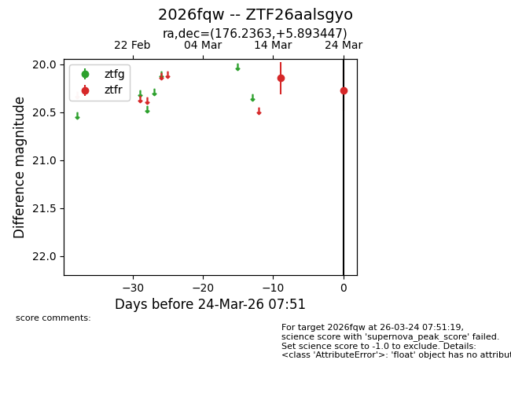
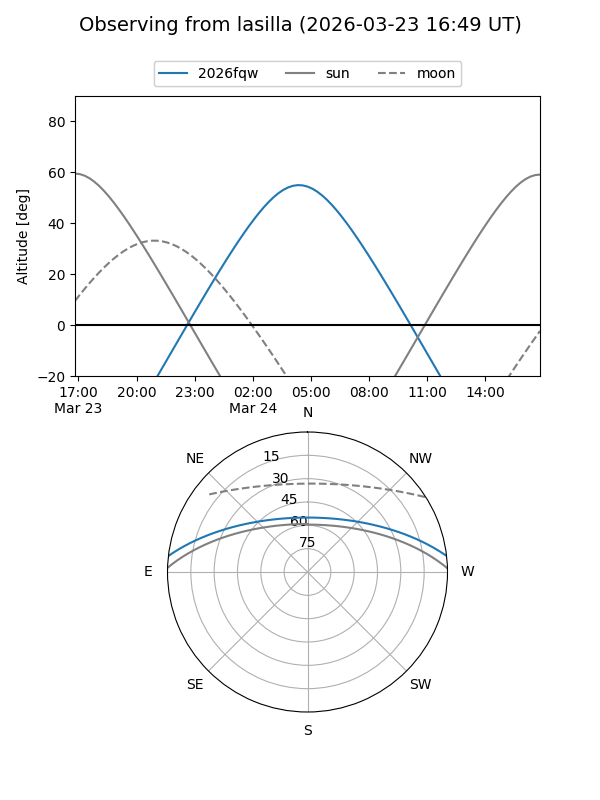
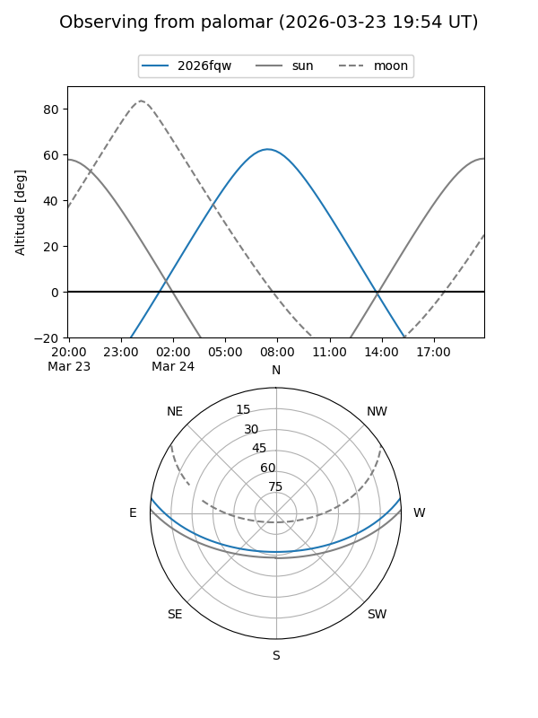

2026fqw
Target 2026fqw at 2026-03-24 07:53
Aliases and brokers:
FINK: link
Lasair: link
ALeRCE: link
TNS: link
YSE: link
alt names
ZTF26aalsgyo (ztf,fink_ztf)
2026fqw (tns,yse)
Coordinates:
equatorial (ra, dec) = 176.2363,+5.89345
equatorial (HMS+DMS) = 11:44:56.71,+05:53:36.41
galactic (l, b) = (263.2709,+63.52193)
Flags:
Photometry:
last ztfr=20.27
2 ztfr detections
Lightcurve

Visibility


Additional plots